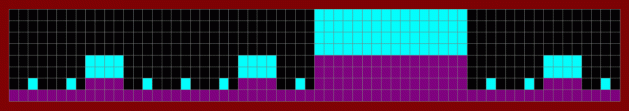

| Funky Cantor |
| This composition is based on the same AABA song form and Cantor generator as the previous example. |
| In this piece, each B section consists of a note or set of notes whose tonal center (home base note) is higher in pitch than that of the surrounding A sections. |
|  |
| This map represents 16 measures of music, with each horizontal increment marking one beat. |
| Each light blue region represents a group of notes that, on the whole, sound higher than the surrounding notes (their average pitch is higher). |
|
| This is a graph of the actual bass line. |
| The x-axis is time and the y-axis is pitch. |
| The light blue segments correspond the first instance of a high region at each of the three scales of measurement. |
| The yellow and blue dashed lines mark the first measure and the first four measures, respectively. |
Return to Fractal Music Lab.
© 2004 Harlan Brothers